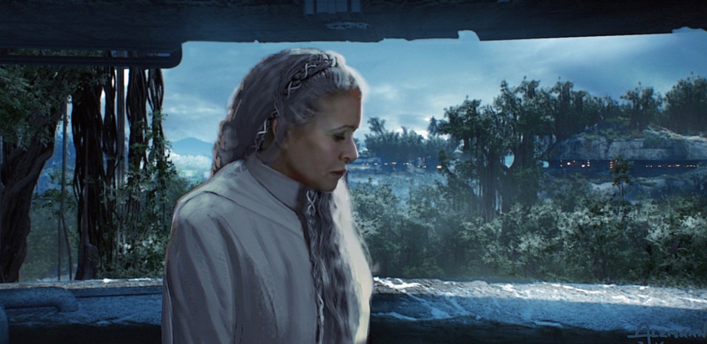

The iron grip of the FIRST ORDER has spread to the farthest reaches of the galaxy. Only a few scattered planets remain unoccupied. Tratorous acts are punishable by death.
Determined to suffocate a growing unrest, Supreme Leader KYLO REN has silenced all communication between neighboring systems.
Led by GENERAL LEIA ORGANA, the Resistance has planned a secret mission to prevent their annihilation and forge a path to freedom...
After the opening crawl, we follow a disguised BB-8 as he infiltrates a First Order transport, hacking their mainframe at the request of Rose Tico.

BB-8 infiltrating the First Order dropship.
Below on the planet Kuat, Finn and Poe Dameron infiltrate a security checkpoint after BB-8 remotely deactivates its weapon scanners. They're disguised as migrant workers amongst a crowd of desperate humans and aliens who agreed to work for the First Order in exchange for limited safety and food.
A suspicious Tusken appears to be following them.

A migrant worker village on Kuat.
Once beyond the checkpoint, Finn and Poe, directed by an alien named Biss Kova, meet an undercover Rose. She has been hiding in the migrant worker village for two weeks. Using a holochip with schematics freshly stolen by BB-8, she shows Finn and Poe a weakness in the orbital ring above the planet that will allow the whole structure, along with much of the First Order's fleet, to be destroyed.
The orbital ring above the planet Kuat.
With help from BB-8, the trio infiltrate the orbital ring's weak point: the base of its power shaft. The mysterious Tusken isn't far behind. They plant explosives and rush out, only to be intercepted by a platoon of Stormtroopers on their way out.
As a crowd of migrant workers watches, a First Order Officer reveals that they knew the attack was coming. He shows the trio footage of ray shields absorbing the explosive blasts and chides them for their "outdated tactics". The trio, disheartened, looks up at a looming orbital ring, still intact. They failed.
Suddenly, the Tusken emerges from the crowd, igniting a double-ended blue lightsaber. The Tusken swiftly massacres the platoon with help from Finn, Poe, and Rose. Once the Stormtroopers have been dealt with, the Tusken removes its mask, revealing itself to be none other than Rey, who looks stronger and more confident than ever. Her double-bladed saber is made from pieces of Anakin's lightsaber fused with parts from her own staff from Episode VII. She's clearly been training, as she effortlessly tosses it at Stormtroopers and summons it back with the Force as if it were a boomerang.
The trio are surprised to see Rey, especially Poe. He seems unusually concerned for her safety, saying he'd rather have died instead of having her risk her life to save them.
The crowd of migrants begins chanting, "Jedi!" and joins the fight, blocking incoming Stormtroopers from reaching our heroes. Far above, Admiral Vonn takes notice, and orders the Knights of Ren to be warned of the Last Jedi.
As our heroes rush back into the powershaft, a fallen Stormtrooper grabs Finn's leg. Finn clearly recognizes this trooper he had previously fought alongside. He breaks free and continues to run, visibly shaken.
The crew take a lightning fast elevator up to the orbital ring, meet up with BB-8, and make the ballsy decision to commandeer a First Order Dreadnaught as their escape vehicle.

Poe, Rey, and Finn infiltrate the First Order Dreadnaught.
Poe, using his insane piloting skills, and Rey, using the Force, manage to power up the massive ship and prepare it for takeoff. There's a noticeable chemistry between them, with the two awkwardly finishing each other's sentences. They manage to boot up the ship's hyperdrive and the crew escapes.
Rey with her double-ended lightsaber after taking the Dreadnaught.

The Dreadnaught escaping Kuat. In the concept art, the Resistance successfully destroys the orbital ring, but in the script, they do not.
The Knights of Ren arrive on Kuat in their ship, the Knife 9. Their leader, Hattaska Ren, accompanied by the duo Ott and Lorl Ren along with the rogue Jaedec Ren, visit Admiral Vonn, who is visibly anxious. Vonn tells Hattaska that BB-8 has been bugged and their location will be revealed as soon as a probe droid is within range.
Hattaska draws his Darksaber, killing Vonn in a single stroke.
The landscape of Coruscant has changed vastly. New structures have been built atop the old buildings of the Republic era. The closer you get to the surface of the planet, the more decrepit the streets become.
The First Order Capitol, far above the buildings on the surface of Coruscant.
Underneath the looming First Order Capitol, a massive hologram of Chancellor Hux is projected in a large open plaza. In the plaza below, a defiant 12-year old boy, Dade, stops to watch after escaping a group of Stormtroopers he had just thrown rocks at. Hux announces the execution of a conspirator against Supreme Leader Kylo Ren.
The conspirator is unmasked, revealing Biss Kova, who had assisted the failed Resistance strike on Kuat. Biss Kova is decapitated by a lightblade guillotine. A woman (presumably Dade's mother), holds her hands over Dade's eyes. He bats her hands away, eyes burning with anger.

Biss Kova, publicly executed in a lightblade guillotine.
Chancellor Hux, visibly aged, then holds a meeting with a council of Galactic Warlords, addressing the stolen Dreadnaught. He attempts to reassure them by telling them that the Knights of Ren have been dispatched to silence the insurgents. The warlords are not impressed, and demand Kylo Ren take matters into his own hands.
Hux assures them that Kylo will return once he acquires the knowledge he seeks.
A bearded Kylo Ren searches Vader's abandoned castle.
As he wanders its halls, Luke Skywalker's Force ghost heckles him. Luke tells Kylo he knows that his search for strength will leave him feeling hollow and urges him to come home to Leia. Kylo dismisses him, saying he will soon be more powerful than any Jedi. He loses his cool, swinging his lightsaber at the ghost. Luke vanishes.
Kylo discovers a Sith holocron containing a recording from Emperor Palpatine. He watches the recording and learns of a mysterious, untapped power known as Mortis. The only other thing he is left with is the name Tor Vallum, which belongs to the Master of the Sith Lord who trained Palpatine.
The holocron, recognizing Kylo is not Vader, promptly self-destructs in a burst of red lightning. The lightning blasts straight into Kylo's face, causing him to scream in extreme pain.
Leia wakes up in panic, whispering "Ben" under her breath.
A concerned Leia feels something happen to Kylo Ren (Ben) through the Force.
Chewbacca informs her that the crew has returned from their mission. She welcomes them back, scolding them for their recklessness. The remaining First Order officers attempt to insult her, and she treats them mercifully. Leia notices Rey sitting alone and asks Finn to check up on her.
After the botched mission, Rey thinks she failed. Finn reassures her, telling her that the people believe in her. She tells him of visions she's been having of Kylo through the Force. Finn tries to tell her he's beyond saving, but Rey cuts him off, saying, "It's never too late to change. You taught me that."
They're interrupted by Chewbacca, who excitedly leads them to a massive arsenal of imperial weaponry within the stolen Dreadnaught. Enough to launch an assault on the Capitol.
On the Millenium Falcon, Finn, Poe, Rey, Chewie, and Rose discuss how they will amass an army large enough to assault the Capitol and put the stolen weaponry to use. They devise a plan to use a Force Beacon, a device from before the Old Republic used to call outlying systems to war. It's uncertain whether or not it will work, but infiltrating the Jedi Temple and activating it is their only chance.
Rey trains blindfolded in the base's Jedi Dojo when she suddenly stops in her tracks due to a disturbance in the Force.
Rey, meditating in the Jedi Dojo.
Meanwhile, on Coruscant, Kylo Ren is rushed to a medical bay in bad shape. He's thrown onto an operating table and has layers of Mandalorian Iron smelted to his face, screaming the whole time.

Kylo Ren being taken to the medical bay, near death.
Back on Korilev, Rey touches her cheek, feeling a sharp but distant pain.
As a final jolt of electricity welds the last bit of Mandalorian Iron into his face, Kylo is suddenly wracked by a vision. He sees a mountain with snowy, jagged peaks; an old temple, with an ancient chamber containing two massive thrones; and a well of pulsing light coming from deep below the chamber.
Rey experiences the same vision, and it continues. Her and Kylo fight in the ancient throne room viciously and intensely. Kylo strikes her down.
Startled, Rey rips off her blindfold, panting. Luke appears before her and tells her she saw the future. Rey tells Luke the place in her vision resembled Mortis, a place dating back before the Jedi in Sith from which two powerful beings, one of light and one of dark, brought balance to the universe. She dismisses it as a myth.
Luke explains to her that a power beyond anything the Jedi have ever known lies beneath the Temple of Mortis. He urges Rey to confront Kylo before he can reach it, otherwise all will be lost.
Rey, enraged by the implication that she'd have to murder Kylo, lashes out at Luke. She mocks him, saying, " 'Balance'. Dark suffocates the light. Light extinguishes the dark. Over and over. How is that balance?".
Back in the medical bay, Kylo Ren receives a new mask.

Kylo Ren receives his new mask.
Chancellor Hux pathetically attempts to use the force on an old lightsaber he has on display in his chamber, failing miserably. He is suddenly interrupted by Kylo Ren, who asks him what happened in his absence.
Hux attempts to scold Kylo for the Knights of Ren's hasty execution of Admiral Vonn, but is immediately threatened by Kylo. He then tries to save face by telling Kylo that while Rey is beloved by the people, they still fear the First Order.
Kylo responds, "They fear ME. Soon I will command the Force in ways unseen since the ancients... The ability to destroy a planet will be... insignificant." He then orders Hux to find the resistance and wipe them out.
Hux timidly asks, "And the girl?"
"Leave her to me."